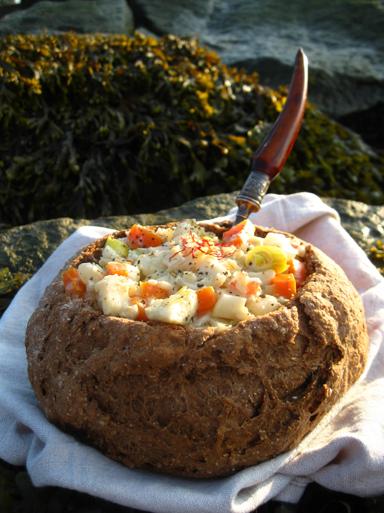

SISTERS-STEW

DESCRIPTION
This stew is exactly as good as it sounds in the book.
The vegetables add a welcome splash of color that is
absent from many seafood chowders. Despite the vast quantities of fish that go into the
stew, it does not taste overly fishy. Instead, the seafood flavors melt into the creamy broth,
mingling with the aromatic garlic and the subtle hint of saffron. Consider serving the stew in a
hollowed loaf of black bread—this adds so many additional complex flavors that you will find
yourself spooning up more and more to try to experience them all.
INGREDIENTS
- 1½ pounds cod, cut into chunks
- 2 cups cold water
- 2 tablespoons unsalted butter
- 2 big leeks (white and light green parts only),
well washed and chopped
- 2 large carrots, chopped
- 2 cloves garlic, minced
- ½ cup white wine
- Salt and ground black pepper to taste
- ½ cup pearl barley, soaked for at least 1 hour in
warm water
- 1 medium turnip, diced
- 1 cup heavy cream (do not try to go light and
use half and-half)
- ½ teaspoon crumbled saffron threads
- One 12-ounce can evaporated milk
- ¼ teaspoon fresh thyme leaves
- ½ cup crabmeat, real or imitation
- ½ cup clam meat
PROCEDURE
- Place ½ pound of the cod in a pot with the water.
- Bring to a boil and cook for 10 minutes.
- Then
remove the fish with a slotted spoon and set it aside for later. Keep the water, as this is your fish stock.
- In a large saucepan, melt the butter and sauté the leeks, carrots, and garlic over medium-low
heat.
- Cook, stirring occasionally, until the vegetables are tender but not brown, about 5 minutes.
- Add the wine and increase the heat, bringing it to a boil. Add the fish stock, thyme, salt, pepper,
barley, and turnips; cook for about 20 minutes, or until the turnips are tender.
- Warm the cream in a small saucepan—it should not even simmer
—then rub the saffron threads into it until the cream turns a nice golden color.
- Stir the cream
and evaporated milk into the broth and turnip mixture.
- Add the remaining chunks of fish (both raw and cooked), the crab, and the clams.
- Cover and
cook on medium low for 5 to 8 minutes, or until the fish is opaque. Serve hot